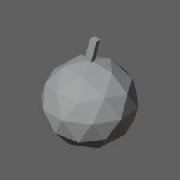
appleAnimals and food0.0761 × 0.08 × 0.0957 m · 86 facesObserved height
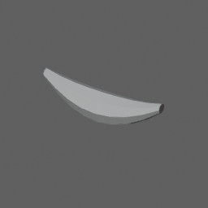
bananaAnimals and food0.22 × 0.052 × 0.064 m · 66 facesObserved height
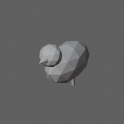
birdAnimals and food0.1712 × 0.45 × 0.305 m · 183 facesObserved height
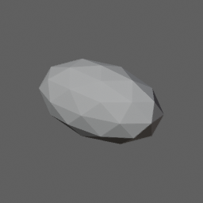
breadAnimals and food0.3329 × 0.18 × 0.2 m · 80 facesObserved height
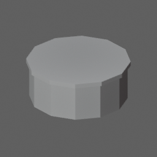
cakeAnimals and food0.34 × 0.34 × 0.135 m · 28 facesObserved height
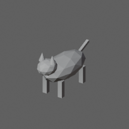
catAnimals and food0.1902 × 0.5702 × 0.3344 m · 212 facesGround
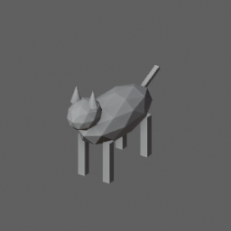
cowAnimals and food0.6657 × 2.1722 × 1.5395 m · 212 facesGround
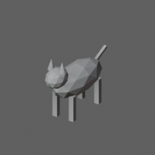
dogAnimals and food0.2663 × 0.8824 × 0.6035 m · 212 facesGround duckAnimals and food0.1712 × 0.45 × 0.305 m · 183 faces
Observed height
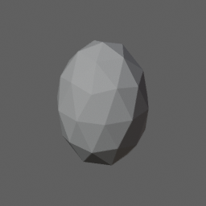
eggAnimals and food0.0428 × 0.045 × 0.065 m · 80 facesObserved height
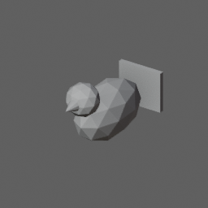
fishAnimals and food0.18 × 0.504 × 0.285 m · 177 facesObserved height
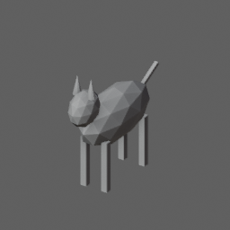
horseAnimals and food0.5231 × 2.0364 × 1.7735 m · 212 facesGround orangeAnimals and food0.0761 × 0.08 × 0.08 m · 80 faces
Observed height
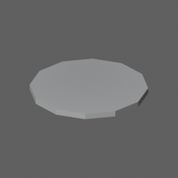
pizzaAnimals and food0.36 × 0.36 × 0.018 m · 14 facesObserved height
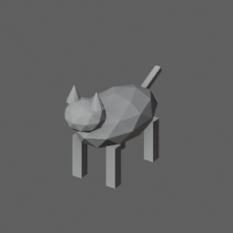
sheepAnimals and food0.4755 × 1.1566 × 0.8375 m · 212 facesGround
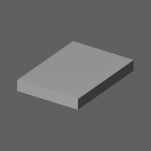
bookElectronics and office0.21 × 0.29 × 0.035 m · 6 facesObserved height
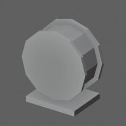
cable reelElectronics and office0.5 × 0.3 × 0.55 m · 48 facesObserved height
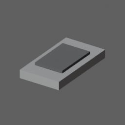
calculatorElectronics and office0.09 × 0.16 × 0.024 m · 12 facesObserved height
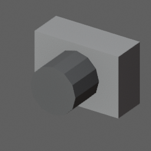
cameraElectronics and office0.13 × 0.105 × 0.09 m · 20 facesObserved height
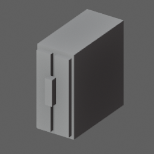
computer towerElectronics and office0.22 × 0.515 × 0.48 m · 30 facesGround
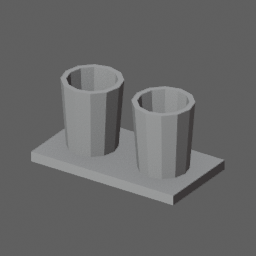
desk organizerElectronics and office0.24 × 0.13 × 0.12 m · 82 facesObserved height
 desktop computerElectronics and office0.5 × 0.15 × 0.51 m · 18 faces
desktop computerElectronics and office0.5 × 0.15 × 0.51 m · 18 facesObserved height
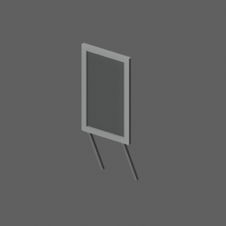
easelElectronics and office0.7 × 0.3384 × 1.8573 m · 42 facesGround
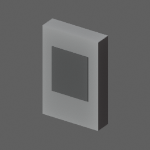
electrical panelElectronics and office0.6 × 0.171 × 0.9 m · 12 facesObserved height
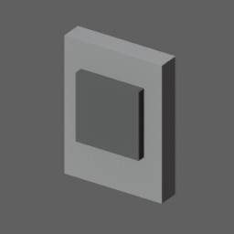
fire alarmElectronics and office0.12 × 0.036 × 0.16 m · 12 facesObserved height
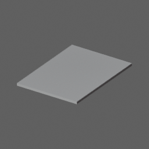
folderElectronics and office0.21 × 0.29 × 0.008 m · 6 facesObserved height
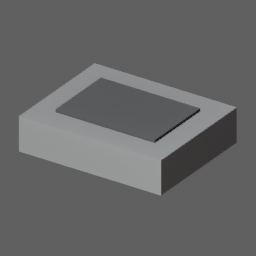
game consoleElectronics and office0.3 × 0.24 × 0.076 m · 12 facesObserved height
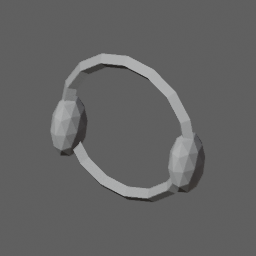
headphonesElectronics and office0.2776 × 0.08 × 0.264 m · 224 facesObserved height
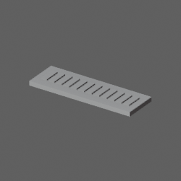
keyboardElectronics and office0.43 × 0.14 × 0.024 m · 78 facesObserved height
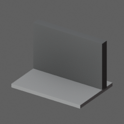
laptopElectronics and office0.34 × 0.24 × 0.23 m · 12 facesObserved height
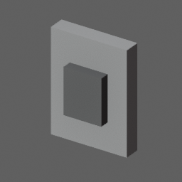
light switchElectronics and office0.12 × 0.0405 × 0.16 m · 12 facesObserved height
 monitorElectronics and office0.58 × 0.24 × 0.5125 m · 42 faces
monitorElectronics and office0.58 × 0.24 × 0.5125 m · 42 facesObserved height
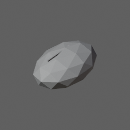
mouseElectronics and office0.0618 × 0.11 × 0.05 m · 86 facesObserved height newspaperElectronics and office0.21 × 0.29 × 0.008 m · 6 faces
Observed height notebookElectronics and office0.21 × 0.29 × 0.008 m · 6 faces
Observed height
 noticeboardElectronics and office1.4 × 0.045 × 0.85 m · 30 faces
noticeboardElectronics and office1.4 × 0.045 × 0.85 m · 30 facesObserved height
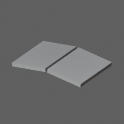
open bookElectronics and office0.4109 × 0.28 × 0.0458 m · 12 facesObserved height
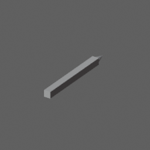
penElectronics and office0.012 × 0.16 × 0.012 m · 17 facesObserved height pencilElectronics and office0.012 × 0.16 × 0.012 m · 17 faces
Observed height power outletElectronics and office0.12 × 0.0405 × 0.16 m · 12 faces
Observed height
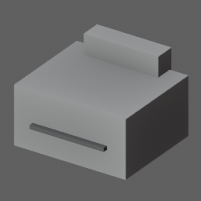
printerElectronics and office0.45 × 0.41 × 0.31 m · 18 facesObserved height
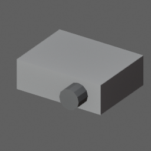
projectorElectronics and office0.3 × 0.28 × 0.1 m · 20 facesObserved height
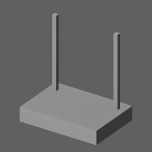
routerElectronics and office0.2 × 0.14 × 0.22 m · 18 facesObserved height
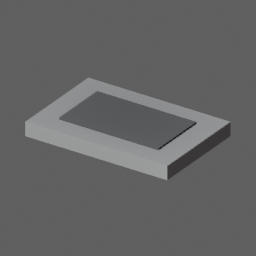
scannerElectronics and office0.42 × 0.28 × 0.046 m · 12 facesObserved height
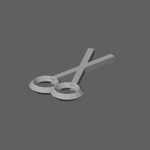
scissorsElectronics and office0.116 × 0.1952 × 0.019 m · 140 facesObserved height
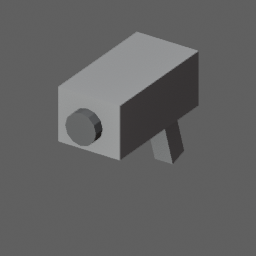
security cameraElectronics and office0.12 × 0.2767 × 0.2151 m · 26 facesObserved height
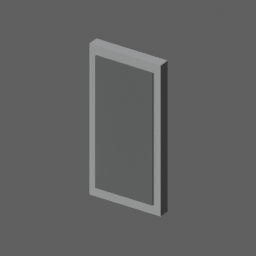
smartphoneElectronics and office0.08 × 0.014 × 0.16 m · 12 facesObserved height
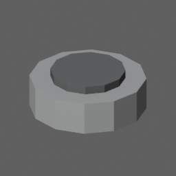
smoke detectorElectronics and office0.14 × 0.14 × 0.05 m · 28 facesObserved height
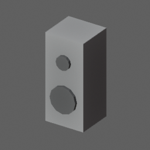
speakerElectronics and office0.25 × 0.249 × 0.55 m · 34 facesObserved height
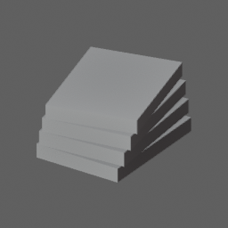
stack of booksElectronics and office0.285 × 0.3437 × 0.155 m · 24 facesObserved height
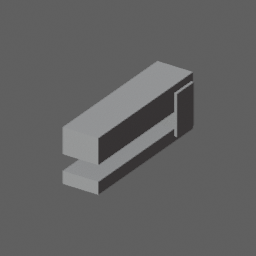
staplerElectronics and office0.04 × 0.14 × 0.0525 m · 18 facesObserved height
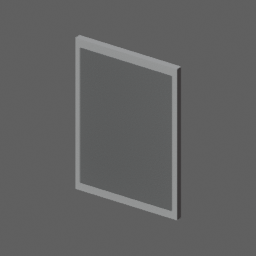
tabletElectronics and office0.2 × 0.014 × 0.28 m · 12 facesObserved height
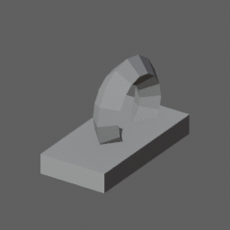
tape dispenserElectronics and office0.07 × 0.14 × 0.098 m · 70 facesObserved height
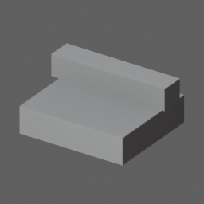
telephoneElectronics and office0.22 × 0.18 × 0.095 m · 12 facesObserved height thermostatElectronics and office0.12 × 0.036 × 0.16 m · 12 faces
Observed height
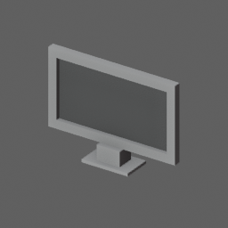
tvElectronics and office1.1 × 0.24 × 0.8025 m · 42 facesObserved height
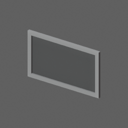
whiteboardElectronics and office1.4 × 0.045 × 0.85 m · 30 facesObserved height
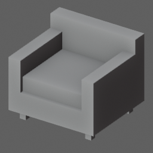
armchairFurniture1 × 0.9 × 0.85 m · 54 facesGround
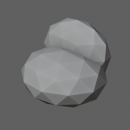
beanbagFurniture0.9035 × 0.875 × 0.85 m · 160 facesGround
 bedFurniture1.65 × 2.115 × 0.9 m · 30 faces
bedFurniture1.65 × 2.115 × 0.9 m · 30 facesGround
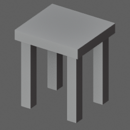
bedside tableFurniture0.48 × 0.43 × 0.55 m · 30 facesGround
 benchFurniture1.5 × 0.4225 × 0.9 m · 36 faces
benchFurniture1.5 × 0.4225 × 0.9 m · 36 facesGround
 bookshelfFurniture1 × 0.32 × 1.8 m · 48 faces
bookshelfFurniture1 × 0.32 × 1.8 m · 48 facesGround bunk bedFurniture1.055 × 1.875 × 1.9 m · 96 faces
Ground
 cabinetFurniture1.1 × 0.545 × 1.3 m · 30 faces
cabinetFurniture1.1 × 0.545 × 1.3 m · 30 facesGround
 chairFurniture0.48 × 0.47 × 0.95 m · 36 faces
chairFurniture0.48 × 0.47 × 0.95 m · 36 facesGround
 chest of drawersFurniture0.9 × 0.545 × 1.05 m · 54 faces
chest of drawersFurniture0.9 × 0.545 × 1.05 m · 54 facesGround clothes rackFurniture1.245 × 0.6 × 1.72 m · 30 faces
Ground coat rackFurniture0.6 × 0.6 × 1.75 m · 52 faces
Ground
 coffee tableFurniture1.05 × 0.6 × 0.42 m · 30 faces
coffee tableFurniture1.05 × 0.6 × 0.42 m · 30 facesGround console tableFurniture1.3 × 0.35 × 0.82 m · 30 faces
Ground cotFurniture1 × 1.8 × 0.79 m · 36 faces
Ground
 counterFurniture1.88 × 0.805 × 0.92 m · 36 faces
counterFurniture1.88 × 0.805 × 0.92 m · 36 facesGround cribFurniture0.775 × 1.8 × 1.2725 m · 132 faces
Ground cushionFurniture0.5 × 0.5 × 0.14 m · 6 faces
Observed height
 deskFurniture1.4 × 0.7 × 0.75 m · 36 faces
deskFurniture1.4 × 0.7 × 0.75 m · 36 facesGround dining chairFurniture0.48 × 0.47 × 0.95 m · 36 faces
Ground dining tableFurniture1.7 × 0.9 × 0.76 m · 30 faces
Ground
 display cabinetFurniture1 × 0.465 × 1.7 m · 54 faces
display cabinetFurniture1 × 0.465 × 1.7 m · 54 facesGround doormatFurniture0.7 × 0.45 × 0.02 m · 6 faces
Ground dresserFurniture1.2 × 0.565 × 1 m · 54 faces
Ground filing cabinetFurniture0.45 × 0.665 × 1.3 m · 54 faces
Ground folding chairFurniture0.48 × 0.4771 × 0.95 m · 48 faces
Ground folding tableFurniture1.2 × 0.6 × 0.73 m · 30 faces
Ground hangerFurniture0.4472 × 0.016 × 0.2805 m · 88 faces
Observed height kitchen cabinetFurniture0.9 × 0.465 × 0.8 m · 30 faces
Ground
 kitchen islandFurniture1.88 × 0.805 × 0.92 m · 36 faces
kitchen islandFurniture1.88 × 0.805 × 0.92 m · 36 facesGround lockerFurniture0.4 × 0.515 × 1.8 m · 48 faces
Ground lounge chairFurniture0.85 × 1.495 × 0.85 m · 60 faces
Ground mattressFurniture1.6 × 2 × 0.22 m · 6 faces
Ground nightstandFurniture0.5 × 0.485 × 0.55 m · 30 faces
Ground
 office chairFurniture0.5958 × 0.6797 × 0.95 m · 120 faces
office chairFurniture0.5958 × 0.6797 × 0.95 m · 120 facesGround
 ottomanFurniture0.7 × 0.55 × 0.45 m · 30 faces
ottomanFurniture0.7 × 0.55 × 0.45 m · 30 facesGround
 pillowFurniture0.65 × 0.4 × 0.12 m · 6 faces
pillowFurniture0.65 × 0.4 × 0.12 m · 6 facesObserved height pool tableFurniture2.2 × 1.2 × 0.88 m · 54 faces
Ground reception deskFurniture1.9 × 0.8 × 1.13 m · 36 faces
Ground reclinerFurniture0.85 × 1.495 × 0.85 m · 60 faces
Ground rocking chairFurniture0.49 × 0.8 × 0.955 m · 48 faces
Ground room dividerFurniture1.6769 × 0.1383 × 1.7 m · 18 faces
Ground round tableFurniture1.1 × 1.1 × 0.76 m · 42 faces
Ground
 rugFurniture2 × 3 × 0.015 m · 6 faces
rugFurniture2 × 3 × 0.015 m · 6 facesGround safeFurniture0.6 × 0.6375 × 0.7 m · 44 faces
Ground
 shelfFurniture1 × 0.32 × 0.9 m · 36 faces
shelfFurniture1 × 0.32 × 0.9 m · 36 facesObserved height shoe rackFurniture0.9 × 0.32 × 0.6 m · 36 faces
Ground side tableFurniture0.55 × 0.5 × 0.58 m · 30 faces
Ground sofaFurniture2.05 × 0.9 × 0.85 m · 54 faces
Ground stoolFurniture0.48 × 0.47 × 0.5 m · 30 faces
Ground tableFurniture1.3 × 0.75 × 0.76 m · 30 faces
Ground wardrobeFurniture1.5 × 0.665 × 2.1 m · 30 faces
Ground workbenchFurniture1.6 × 0.65 × 0.9 m · 36 faces
Ground air conditionerKitchen and household0.85 × 0.2425 × 0.28 m · 12 faces
Observed height alarm clockKitchen and household0.26 × 0.049 × 0.26 m · 26 faces
Observed height bathtubKitchen and household1.64 × 0.8 × 0.52 m · 30 faces
Ground bathtub faucetKitchen and household0.03 × 0.215 × 0.315 m · 12 faces
Observed height bidetKitchen and household0.43 × 0.58 × 0.495 m · 158 faces
Ground binKitchen and household0.6 × 0.6 × 0.85 m · 38 faces
Ground blenderKitchen and household0.3 × 0.25 × 0.4425 m · 64 faces
Observed height
 bottleKitchen and household0.086 × 0.086 × 0.29 m · 40 faces
bottleKitchen and household0.086 × 0.086 × 0.29 m · 40 facesObserved height bowlKitchen and household0.28 × 0.28 × 0.1 m · 38 faces
Observed height broomKitchen and household0.32 × 0.1 × 1.285 m · 12 faces
Ground bucketKitchen and household0.44 × 0.44 × 0.38 m · 38 faces
Ground canKitchen and household0.066 × 0.066 × 0.12 m · 14 faces
Observed height ceiling fanKitchen and household1.027 × 1.1858 × 0.39 m · 46 faces
Observed height coffee machineKitchen and household0.3 × 0.28 × 0.41 m · 56 faces
Observed height cooking potKitchen and household0.464 × 0.28 × 0.143 m · 166 faces
Observed height cupKitchen and household0.1168 × 0.088 × 0.105 m · 86 faces
Observed height cutting boardKitchen and household0.35 × 0.315 × 0.018 m · 12 faces
Observed height
 dishwasherKitchen and household0.6 × 0.69 × 0.85 m · 36 faces
dishwasherKitchen and household0.6 × 0.69 × 0.85 m · 36 facesGround
 drinking glassKitchen and household0.08 × 0.08 × 0.13 m · 38 faces
drinking glassKitchen and household0.08 × 0.08 × 0.13 m · 38 facesObserved height drying rackKitchen and household1.2236 × 0.6286 × 0.9208 m · 60 faces
Ground dustpanKitchen and household0.25 × 0.4306 × 0.1079 m · 12 faces
Observed height
 fanKitchen and household0.524 × 0.44 × 1.262 m · 124 faces
fanKitchen and household0.524 × 0.44 × 1.262 m · 124 facesGround floor lampKitchen and household0.4565 × 0.48 × 1.6 m · 40 faces
Ground forkKitchen and household0.029 × 0.205 × 0.018 m · 24 faces
Observed height
 fridgeKitchen and household0.72 × 0.765 × 1.8 m · 36 faces
fridgeKitchen and household0.72 × 0.765 × 1.8 m · 36 facesGround frying panKitchen and household0.52 × 0.28 × 0.042 m · 44 faces
Observed height grandfather clockKitchen and household0.5 × 0.369 × 1.9 m · 56 faces
Ground hair dryerKitchen and household0.12 × 0.22 × 0.24 m · 20 faces
Observed height ironKitchen and household0.13 × 0.24 × 0.2095 m · 76 faces
Observed height ironing boardKitchen and household1.2 × 0.38 × 0.85 m · 30 faces
Ground jarKitchen and household0.126 × 0.126 × 0.16 m · 28 faces
Observed height kettleKitchen and household0.4522 × 0.23 × 0.2695 m · 178 faces
Observed height knifeKitchen and household0.035 × 0.265 × 0.018 m · 12 faces
Observed height
 lampKitchen and household0.4565 × 0.48 × 1.6 m · 40 faces
lampKitchen and household0.4565 × 0.48 × 1.6 m · 40 facesGround laundry basketKitchen and household0.5 × 0.35 × 0.3 m · 30 faces
Ground
 microwaveKitchen and household0.52 × 0.46 × 0.3 m · 18 faces
microwaveKitchen and household0.52 × 0.46 × 0.3 m · 18 facesObserved height mopKitchen and household0.32 × 0.1 × 1.285 m · 12 faces
Ground
 ovenKitchen and household0.65 × 0.6925 × 0.9175 m · 92 faces
ovenKitchen and household0.65 × 0.6925 × 0.9175 m · 92 facesGround
 plateKitchen and household0.28 × 0.28 × 0.025 m · 38 faces
plateKitchen and household0.28 × 0.28 × 0.025 m · 38 facesObserved height
 potKitchen and household0.46 × 0.46 × 0.35 m · 38 faces
potKitchen and household0.46 × 0.46 × 0.35 m · 38 facesObserved height radiatorKitchen and household0.7 × 0.15 × 0.65 m · 88 faces
Ground rice cookerKitchen and household0.3 × 0.28 × 0.3175 m · 100 faces
Observed height saucepanKitchen and household0.52 × 0.28 × 0.13 m · 44 faces
Observed height sewing machineKitchen and household0.3 × 0.25 × 0.38 m · 24 faces
Observed height showerKitchen and household0.9 × 0.9 × 2 m · 62 faces
Ground shower headKitchen and household0.16 × 0.295 × 0.315 m · 26 faces
Observed height sinkKitchen and household0.7 × 0.52 × 0.445 m · 74 faces
Observed height soap dispenserKitchen and household0.098 × 0.086 × 0.309 m · 46 faces
Observed height spoonKitchen and household0.0361 × 0.1975 × 0.018 m · 86 faces
Observed height stand mixerKitchen and household0.3 × 0.25 × 0.41 m · 56 faces
Observed height stoveKitchen and household0.65 × 0.6925 × 0.9175 m · 92 faces
Ground table lampKitchen and household0.4565 × 0.48 × 0.6 m · 40 faces
Observed height teapotKitchen and household0.4522 × 0.23 × 0.2695 m · 178 faces
Observed height tissue boxKitchen and household0.23 × 0.12 × 0.16 m · 12 faces
Observed height toasterKitchen and household0.28 × 0.17 × 0.1845 m · 18 faces
Observed height
 toiletKitchen and household0.43 × 0.67 × 0.76 m · 164 faces
toiletKitchen and household0.43 × 0.67 × 0.76 m · 164 facesGround toilet paper rollKitchen and household0.13 × 0.13 × 0.05 m · 64 faces
Observed height toothbrushKitchen and household0.018 × 0.1775 × 0.023 m · 12 faces
Observed height toothbrush holderKitchen and household0.08 × 0.08 × 0.13 m · 38 faces
Observed height
 towelKitchen and household0.5 × 0.85 × 0.01 m · 6 faces
towelKitchen and household0.5 × 0.85 × 0.01 m · 6 facesObserved height towel railKitchen and household0.72 × 0.09 × 0.02 m · 18 faces
Observed height trash bagKitchen and household0.428 × 0.4 × 0.7 m · 91 faces
Ground
 trayKitchen and household0.452 × 0.3 × 0.0305 m · 30 faces
trayKitchen and household0.452 × 0.3 × 0.0305 m · 30 facesObserved height umbrellaKitchen and household0.9511 × 1 × 0.9875 m · 25 faces
Observed height umbrella standKitchen and household0.28 × 0.28 × 0.5 m · 38 faces
Ground upright vacuumKitchen and household0.34 × 0.5 × 1.1041 m · 18 faces
Ground urinalKitchen and household0.4 × 0.34 × 0.75 m · 166 faces
Observed height vacuum cleanerKitchen and household0.43 × 0.775 × 1.1041 m · 148 faces
Ground
 vaseKitchen and household0.3 × 0.3 × 0.45 m · 86 faces
vaseKitchen and household0.3 × 0.3 × 0.45 m · 86 facesObserved height
 wall clockKitchen and household0.26 × 0.049 × 0.26 m · 26 faces
wall clockKitchen and household0.26 × 0.049 × 0.26 m · 26 facesObserved height washbasinKitchen and household0.52 × 0.61 × 0.5894 m · 202 faces
Ground washerKitchen and household0.6 × 0.6775 × 0.85 m · 44 faces
Ground water dispenserKitchen and household0.35 × 0.3775 × 1.25 m · 26 faces
Ground water heaterKitchen and household0.46 × 0.46 × 1 m · 14 faces
Ground wine bottleKitchen and household0.086 × 0.086 × 0.29 m · 40 faces
Observed height beach umbrellaPark and nature1.9021 × 2 × 2.275 m · 25 faces
Ground boulderPark and nature1.0733 × 0.7656 × 0.7 m · 20 faces
Ground bushPark and nature1.656 × 1.3 × 0.91 m · 240 faces
Ground cactusPark and nature0.91 × 0.26 × 1.45 m · 54 faces
Ground campfirePark and nature1.0054 × 1 × 0.825 m · 73 faces
Ground deciduous treePark and nature2.5266 × 1.55 × 3.05 m · 250 faces
Ground deck chairPark and nature0.85 × 1.495 × 0.85 m · 60 faces
Ground firewoodPark and nature1.0054 × 1 × 0.41 m · 40 faces
Ground
 flowerPark and nature0.2673 × 0.2406 × 0.57 m · 126 faces
flowerPark and nature0.2673 × 0.2406 × 0.57 m · 126 facesGround flower bedPark and nature1.6 × 0.8 × 0.425 m · 66 faces
Ground fountainPark and nature1.8 × 1.8 × 1.15 m · 42 faces
Ground gazeboPark and nature2.6 × 1.7 × 2.46 m · 30 faces
Ground hedgePark and nature2 × 0.65 × 1.1 m · 6 faces
Ground logPark and nature0.4565 × 1.4 × 0.48 m · 12 faces
Ground palm treePark and nature2.3321 × 2.392 × 2.2119 m · 52 faces
Ground park benchPark and nature1.7 × 0.455 × 0.975 m · 36 faces
Ground picnic tablePark and nature1.8 × 1.8 × 0.75 m · 42 faces
Ground pine treePark and nature1.9972 × 2.1 × 3.6 m · 43 faces
Ground planterPark and nature0.44 × 0.44 × 0.38 m · 38 faces
Ground pondPark and nature2.8532 × 2 × 0.08 m · 80 faces
Ground
 rockPark and nature1.0733 × 0.7656 × 0.7 m · 20 faces
rockPark and nature1.0733 × 0.7656 × 0.7 m · 20 facesGround rock wallPark and nature2.1293 × 0.3232 × 1.26 m · 400 faces
Ground sandboxPark and nature2 × 2 × 0.2 m · 30 faces
Ground sculpturePark and nature1.36 × 0.6 × 1.58 m · 70 faces
Ground seesawPark and nature2.4839 × 0.3 × 0.8263 m · 12 faces
Ground slidePark and nature0.6 × 1.6727 × 1.5 m · 42 faces
Ground statuePark and nature0.7 × 0.6 × 1.92 m · 116 faces
Ground swingPark and nature2.07 × 1.4667 × 2.2506 m · 48 faces
Ground tentPark and nature2.0147 × 2.2 × 1.0573 m · 18 faces
Ground treePark and nature1.9972 × 2.1 × 3.6 m · 43 faces
Ground tree stumpPark and nature0.4565 × 0.48 × 0.45 m · 12 faces
Ground ballSport and leisure0.1902 × 0.2 × 0.2 m · 80 faces
Observed height barbellSport and leisure1.8 × 0.36 × 0.36 m · 34 faces
Observed height baseball batSport and leisure0.0761 × 0.08 × 0.85 m · 12 faces
Observed height basketballSport and leisure0.2283 × 0.24 × 0.24 m · 80 faces
Observed height basketball hoopSport and leisure1 × 1.295 × 2.975 m · 82 faces
Ground chessboardSport and leisure0.4 × 0.4 × 0.02 m · 6 faces
Observed height drumSport and leisure0.6 × 0.6 × 0.35 m · 14 faces
Ground dumbbellSport and leisure0.4 × 0.2 × 0.2 m · 34 faces
Observed height exercise bikeSport and leisure0.6 × 1 × 1.1175 m · 44 faces
Ground footballSport and leisure0.2092 × 0.34 × 0.22 m · 80 faces
Observed height guitarSport and leisure0.3614 × 0.12 × 1.06 m · 92 faces
Observed height helmetSport and leisure0.2473 × 0.3175 × 0.24 m · 86 faces
Observed height microphoneSport and leisure0.0713 × 0.075 × 0.25 m · 94 faces
Observed height microphone standSport and leisure0.4657 × 0.872 × 1.7095 m · 38 faces
Ground music standSport and leisure0.5532 × 0.5377 × 1.6724 m · 38 faces
Ground pianoSport and leisure1.4 × 0.805 × 1.2 m · 180 faces
Ground pingpong tableSport and leisure2.74 × 1.52 × 0.945 m · 36 faces
Ground punching bagSport and leisure0.44 × 0.44 × 1.45 m · 20 faces
Ground skateboardSport and leisure0.3 × 0.8 × 0.085 m · 136 faces
Observed height skisSport and leisure0.3 × 1.8 × 0.0745 m · 24 faces
Observed height snowboardSport and leisure0.2378 × 1.5 × 0.07 m · 80 faces
Observed height soccer goalSport and leisure3.05 × 0.941 × 2.0322 m · 30 faces
Ground surfboardSport and leisure0.4755 × 1.9 × 0.07 m · 80 faces
Observed height teddy bearSport and leisure0.2951 × 0.22 × 0.545 m · 640 faces
Observed height tennis ballSport and leisure0.0637 × 0.067 × 0.067 m · 80 faces
Observed height tennis netSport and leisure3.05 × 0.05 × 1.025 m · 126 faces
Ground tennis racketSport and leisure0.324 × 0.025 × 0.562 m · 70 faces
Observed height toy blockSport and leisure0.12 × 0.12 × 0.12 m · 6 faces
Observed height treadmillSport and leisure0.75 × 1.65 × 1.2 m · 30 faces
Ground weight benchSport and leisure1.1 × 0.32 × 0.545 m · 36 faces
Ground yoga matSport and leisure0.65 × 1.8 × 0.012 m · 6 faces
Ground antennaStreet and architecture1.2 × 0.03 × 1.4 m · 24 faces
Observed height arcade machineStreet and architecture0.65 × 1.015 × 2 m · 42 faces
Ground archStreet and architecture1.55 × 0.22 × 2.775 m · 66 faces
Ground atmStreet and architecture0.85 × 0.745 × 1.9 m · 42 faces
Ground awningStreet and architecture2 × 0.9629 × 0.4467 m · 12 faces
Observed height balconyStreet and architecture2.45 × 1 × 1.1225 m · 72 faces
Ground bike rackStreet and architecture1.425 × 0.385 × 0.5625 m · 90 faces
Ground
 blindStreet and architecture1.3 × 0.06 × 1.03 m · 84 faces
blindStreet and architecture1.3 × 0.06 × 1.03 m · 84 facesObserved height bollardStreet and architecture0.17 × 0.17 × 0.85 m · 14 faces
Ground
 boothStreet and architecture1 × 0.805 × 2 m · 36 faces
boothStreet and architecture1 × 0.805 × 2 m · 36 facesGround bus shelterStreet and architecture2.6 × 1.7 × 2.46 m · 36 faces
Ground chimneyStreet and architecture0.65 × 0.65 × 1.41 m · 12 faces
Observed height concrete barrierStreet and architecture2 × 0.5 × 0.85 m · 12 faces
Ground construction fenceStreet and architecture2.45 × 0.055 × 1.8225 m · 66 faces
Ground curbStreet and architecture1.5 × 0.18 × 0.15 m · 6 faces
Ground
 curtainStreet and architecture1.4326 × 0.13 × 2 m · 96 faces
curtainStreet and architecture1.4326 × 0.13 × 2 m · 96 facesObserved height doorStreet and architecture1.06 × 0.17 × 2.15 m · 38 faces
Ground doorwayStreet and architecture1.5 × 0.22 × 2.2 m · 18 faces
Ground drainpipeStreet and architecture0.12 × 0.12 × 2 m · 14 faces
Ground drinking fountainStreet and architecture0.46 × 0.46 × 0.96 m · 50 faces
Ground dumpsterStreet and architecture1.9 × 1.08 × 1.255 m · 68 faces
Ground electrical boxStreet and architecture0.6 × 0.171 × 0.9 m · 12 faces
Observed height elevatorStreet and architecture1.4 × 0.1175 × 2.2 m · 36 faces
Ground escalatorStreet and architecture1.28 × 2.8397 × 2.5347 m · 72 faces
Ground
 fenceStreet and architecture2.05 × 0.055 × 1.5225 m · 66 faces
fenceStreet and architecture2.05 × 0.055 × 1.5225 m · 66 facesGround fire extinguisherStreet and architecture0.2174 × 0.18 × 0.5225 m · 26 faces
Observed height fire hose reelStreet and architecture0.5 × 0.225 × 0.5 m · 42 faces
Observed height fire hydrantStreet and architecture0.42 × 0.32 × 0.755 m · 122 faces
Ground
 fireplaceStreet and architecture1.35 × 0.6 × 1.12 m · 30 faces
fireplaceStreet and architecture1.35 × 0.6 × 1.12 m · 30 facesGround flagStreet and architecture0.985 × 0.06 × 3 m · 20 faces
Observed height flagpoleStreet and architecture0.985 × 0.06 × 3 m · 20 faces
Observed height garage doorStreet and architecture2.4 × 0.13 × 2.2 m · 102 faces
Ground gateStreet and architecture2.4 × 0.1 × 2.2 m · 96 faces
Ground gutterStreet and architecture0.16 × 0.16 × 2 m · 38 faces
Observed height handrailStreet and architecture2.03 × 0.045 × 1.6212 m · 24 faces
Ground
 houseStreet and architecture3.2954 × 3.4 × 3.4183 m · 24 faces
houseStreet and architecture3.2954 × 3.4 × 3.4183 m · 24 facesObserved height ladderStreet and architecture0.48 × 0.04 × 2.1 m · 60 faces
Ground mailboxStreet and architecture0.4 × 0.515 × 1.6 m · 26 faces
Ground manhole coverStreet and architecture0.7 × 0.7 × 0.025 m · 14 faces
Ground mirrorStreet and architecture1 × 0.07 × 0.8 m · 30 faces
Observed height outdoor binStreet and architecture0.6 × 0.6 × 0.95 m · 52 faces
Ground parking meterStreet and architecture0.2 × 0.16 × 1.775 m · 26 faces
Ground pictureStreet and architecture1 × 0.07 × 0.8 m · 30 faces
Observed height pillarStreet and architecture0.55 × 0.55 × 2.6 m · 26 faces
Ground
 poleStreet and architecture0.11 × 0.11 × 3.2 m · 14 faces
poleStreet and architecture0.11 × 0.11 × 3.2 m · 14 facesGround power line poleStreet and architecture1.6 × 0.2 × 5 m · 62 faces
Ground
 railingStreet and architecture2.05 × 0.055 × 1.0225 m · 66 faces
railingStreet and architecture2.05 × 0.055 × 1.0225 m · 66 facesGround rampStreet and architecture1.4 × 3 × 1 m · 5 faces
Ground road barrierStreet and architecture1.7 × 0.55 × 0.9 m · 36 faces
Ground road signStreet and architecture0.8 × 0.07 × 1.825 m · 20 faces
Ground roller doorStreet and architecture2.4 × 0.13 × 2.2 m · 102 faces
Ground roofStreet and architecture3.2954 × 3.4 × 1.0366 m · 12 faces
Observed height satellite dishStreet and architecture0.7608 × 0.6357 × 1 m · 92 faces
Observed height scaffoldStreet and architecture1.435 × 0.735 × 2.4151 m · 48 faces
Ground
 shedStreet and architecture2.6 × 1.7 × 2.46 m · 48 faces
shedStreet and architecture2.6 × 1.7 × 2.46 m · 48 facesObserved height solar panelStreet and architecture1 × 1.5642 × 0.701 m · 18 faces
Observed height speed bumpStreet and architecture1.5 × 0.3 × 0.08 m · 6 faces
Ground stairsStreet and architecture1.2 × 1.68 × 1.08 m · 36 faces
Ground stop signStreet and architecture0.7 × 0.07 × 1.95 m · 24 faces
Ground storm drainStreet and architecture0.42 × 0.425 × 0.025 m · 66 faces
Ground streetlightStreet and architecture0.73 × 0.22 × 3.23 m · 26 faces
Ground ticket machineStreet and architecture0.85 × 0.745 × 1.9 m · 42 faces
Ground traffic coneStreet and architecture0.4 × 0.4 × 0.6345 m · 18 faces
Ground traffic lightStreet and architecture0.665 × 0.205 × 3.375 m · 68 faces
Ground turnstileStreet and architecture0.7757 × 0.5634 × 1.2177 m · 24 faces
Ground vending machineStreet and architecture0.85 × 0.745 × 1.9 m · 42 faces
Ground ventStreet and architecture0.6 × 0.07 × 0.4 m · 78 faces
Observed height
 wallStreet and architecture3 × 0.18 × 2.6 m · 6 faces
wallStreet and architecture3 × 0.18 × 2.6 m · 6 facesGround windowStreet and architecture1 × 0.07 × 0.8 m · 42 faces
Observed height ambulanceTransport and storage2.26 × 5.63 × 2.66 m · 98 faces
Ground backpackTransport and storage0.35 × 0.25 × 0.582 m · 76 faces
Observed height barrelTransport and storage0.61 × 0.61 × 0.85 m · 66 faces
Ground
 basketTransport and storage0.5 × 0.35 × 0.57 m · 94 faces
basketTransport and storage0.5 × 0.35 × 0.57 m · 94 facesGround
 bicycleTransport and storage0.6 × 1.97 × 1.0325 m · 224 faces
bicycleTransport and storage0.6 × 1.97 × 1.0325 m · 224 facesGround boatTransport and storage1.4266 × 3.5 × 0.55 m · 86 faces
Ground boxTransport and storage0.65 × 0.55 × 0.55 m · 6 faces
Ground briefcaseTransport and storage0.44 × 0.1 × 0.432 m · 70 faces
Observed height
 busTransport and storage2.56 × 8.03 × 3 m · 86 faces
busTransport and storage2.56 × 8.03 × 3 m · 86 facesGround canoeTransport and storage0.856 × 3.5 × 0.55 m · 86 faces
Ground carTransport and storage1.96 × 4.23 × 1.45 m · 86 faces
Ground cardboard boxTransport and storage0.6 × 0.455 × 0.406 m · 12 faces
Ground crateTransport and storage0.62 × 0.495 × 0.4 m · 30 faces
Ground duffel bagTransport and storage0.6 × 0.3 × 0.412 m · 70 faces
Ground fire truckTransport and storage2.26 × 5.63 × 2.725 m · 158 faces
Ground forkliftTransport and storage1.2 × 3 × 2.2 m · 92 faces
Ground fuel pumpTransport and storage1.0473 × 0.745 × 1.9 m · 48 faces
Ground gas cylinderTransport and storage0.32 × 0.32 × 1.03 m · 108 faces
Ground hand truckTransport and storage0.47 × 0.505 × 1.2175 m · 52 faces
Ground
 handbagTransport and storage0.35 × 0.14 × 0.382 m · 70 faces
handbagTransport and storage0.35 × 0.14 × 0.382 m · 70 facesObserved height jerry canTransport and storage0.35 × 0.16 × 0.57 m · 70 faces
Ground kick scooterTransport and storage0.5 × 1.36 × 1.0275 m · 46 faces
Ground
 motorcycleTransport and storage0.6 × 1.9 × 1.0175 m · 162 faces
motorcycleTransport and storage0.6 × 1.9 × 1.0175 m · 162 facesGround oil drumTransport and storage0.59 × 0.59 × 0.85 m · 142 faces
Ground palletTransport and storage1 × 1.2 × 0.1325 m · 54 faces
Ground pallet jackTransport and storage0.58 × 1.2249 × 1.2024 m · 74 faces
Ground pickup truckTransport and storage1.98 × 4.8 × 1.775 m · 92 faces
Ground police carTransport and storage1.96 × 4.23 × 1.59 m · 92 faces
Ground sailboatTransport and storage1.4266 × 3.5 × 3.325 m · 98 faces
Ground scooterTransport and storage0.5 × 1.54 × 1.1175 m · 58 faces
Ground shipping containerTransport and storage2.45 × 6 × 2.6 m · 198 faces
Ground shopping bagTransport and storage0.3 × 0.15 × 0.527 m · 70 faces
Observed height shopping basketTransport and storage0.5 × 0.35 × 0.57 m · 94 faces
Ground shopping cartTransport and storage0.65 × 0.89 × 1.15 m · 110 faces
Ground storage tubTransport and storage0.6 × 0.45 × 0.4 m · 6 faces
Ground strollerTransport and storage0.65 × 0.935 × 1.045 m · 192 faces
Ground suitcaseTransport and storage0.47 × 0.26 × 0.782 m · 126 faces
Ground toolboxTransport and storage0.62 × 0.47 × 0.615 m · 76 faces
Ground tractorTransport and storage1.2 × 2 × 1.925 m · 88 faces
Ground traffic buoyTransport and storage0.6657 × 0.7 × 1.2 m · 26 faces
Ground trailerTransport and storage1.88 × 3.9066 × 0.725 m · 68 faces
Ground trolleyTransport and storage0.65 × 0.89 × 0.85 m · 92 faces
Ground truckTransport and storage2.26 × 5.63 × 2.5 m · 92 faces
Ground vanTransport and storage2.11 × 4.73 × 2.05 m · 86 faces
Ground wheelbarrowTransport and storage0.6 × 1.6042 × 0.717 m · 32 faces
Ground wheelchairTransport and storage0.65 × 0.935 × 0.98 m · 180 faces
Ground air compressorWorkshop retail and medical0.7 × 0.48 × 0.7 m · 82 faces
Ground axeWorkshop retail and medical0.28 × 0.05 × 1.2 m · 12 faces
Observed height cash registerWorkshop retail and medical0.4 × 0.35 × 0.36 m · 18 faces
Observed height checkout counterWorkshop retail and medical1.9 × 0.8 × 1.13 m · 36 faces
Ground clothing rackWorkshop retail and medical1.245 × 0.6 × 1.72 m · 30 faces
Ground drillWorkshop retail and medical0.12 × 0.34 × 0.24 m · 34 faces
Observed height examination tableWorkshop retail and medical0.65 × 1.8 × 0.79 m · 36 faces
Ground first aid boxWorkshop retail and medical0.12 × 0.042 × 0.16 m · 18 faces
Observed height generatorWorkshop retail and medical0.7 × 0.48 × 0.56 m · 74 faces
Ground hammerWorkshop retail and medical0.18 × 0.045 × 0.3025 m · 12 faces
Observed height handsawWorkshop retail and medical0.25 × 0.025 × 0.28 m · 12 faces
Observed height hospital bedWorkshop retail and medical1.025 × 1.8 × 1.2725 m · 188 faces
Ground industrial pipeWorkshop retail and medical0.32 × 0.32 × 2 m · 14 faces
Ground iv standWorkshop retail and medical0.5032 × 0.5377 × 1.6075 m · 38 faces
Ground mannequinWorkshop retail and medical0.7 × 0.23 × 1.72 m · 110 faces
Ground medical cartWorkshop retail and medical0.65 × 0.89 × 0.85 m · 92 faces
Ground microscopeWorkshop retail and medical0.25 × 0.3 × 0.4367 m · 24 faces
Observed height paint brushWorkshop retail and medical0.07 × 0.025 × 0.34 m · 12 faces
Observed height paint bucketWorkshop retail and medical0.44 × 0.44 × 0.38 m · 38 faces
Ground paint rollerWorkshop retail and medical0.25 × 0.09 × 1.245 m · 20 faces
Observed height pipe elbowWorkshop retail and medical0.32 × 0.81 × 2.01 m · 28 faces
Observed height pliersWorkshop retail and medical0.116 × 0.1952 × 0.019 m · 140 faces
Observed height rakeWorkshop retail and medical0.4 × 0.118 × 1.285 m · 66 faces
Observed height safety signWorkshop retail and medical0.6 × 0.051 × 0.4 m · 12 faces
Observed height shop signWorkshop retail and medical0.6 × 0.051 × 0.4 m · 12 faces
Observed height shopping displayWorkshop retail and medical1 × 0.45 × 1.6 m · 42 faces
Ground shovelWorkshop retail and medical0.24 × 0.05 × 1.3 m · 12 faces
Observed height stretcherWorkshop retail and medical0.65 × 1.8 × 0.79 m · 92 faces
Ground work lightWorkshop retail and medical0.5 × 0.5 × 1.475 m · 26 faces
Ground wrenchWorkshop retail and medical0.114 × 0.025 × 0.357 m · 70 faces
Observed height